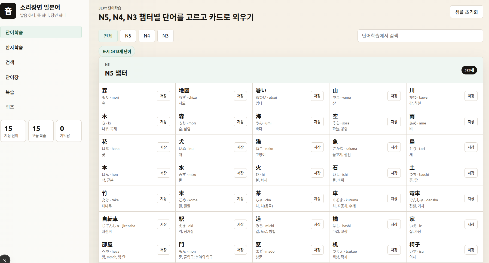

개인 프로젝트 개요서
소리장면 일본어
경선식 암기법으로 일본어 단어를 빠르게 외우는 학습 앱
Next.js 15
TypeScript
JLPT N5/N4/N3
Claude Code
2,413개 단어 DB
핵심 한 문장
일본어 단어의 발음과 뜻을 한국어 연상 이미지로 연결해 빠르게 외울 수 있게 돕는 경선식 스타일 단어 학습 웹앱
외국어 단어 암기의 가장 큰 어려움은 발음–뜻 연결고리가 없다는 점이다.
이 앱은 일본어 발음과 한국어 뜻을 짧은 암기 스토리로 연결하는 경선식 영단어 암기법을 일본어에 적용한다.
단순 반복 암기 대신, 단어마다 소리 연상·한자 이야기·예문을 함께 제공해 한 번 보면 오래 기억되도록 설계했다.
구현 방식
웹 앱 (Next.js, 로컬 실행)
단어 DB 규모
N5 326개 · N4 523개 · N3 1,564개
총 2,413개 (AI 암기 카드 전수 생성)
개발 도구
Claude Code · Codex (AI 코딩 에이전트)
JP
일본어 입문자
히라가나는 외웠지만
단어가 안 외워지는 학습자
N급
JLPT 준비생
N5~N3 단어를
빠르게 정리하고 싶은 수험생
漢
한자 때문에 막힌 학습자
뜻이 왜 그렇게 되는지
이해가 안 돼서 포기한 사람
1
앱을 열면 JLPT 레벨(N5/N4/N3)을 선택하고 오늘의 단어 카드가 표시된다.
2
카드 앞면에는 일본어 단어·읽기·뜻이 보인다. 아래로 펼치면 경선식 암기문 ("나무가 모리모리 모여 있는 곳이 숲")과 한자 스토리가 나온다.
3
외웠으면 "기억했어요", 모르면 "다시 볼게요" 버튼을 누른다. 간격 반복(SRS) 알고리즘에 따라 다음 복습 날짜가 자동으로 잡힌다.
4
검색 탭에서 모르는 단어를 검색해 즉시 암기 카드를 확인할 수 있다. DB에 없는 단어는 AI가 실시간으로 카드를 생성한다.
5
한자 탭에서 한자별 부수 분해 스토리를 보며 한자 암기를 보강한다. 퀴즈 탭에서 4지선다 테스트로 실력을 확인한다.
카드
경선식 암기 카드
발음 연상 암기문 + 한자 부수 스토리 + 예문을 한 카드에
SRS
SRS 복습 스케줄
기억/혼동 버튼으로 간격 반복 알고리즘 자동 적용
검색
단어 검색
2,413개 DB 즉시 검색. DB 없는 단어는 AI 실시간 생성
漢字
한자 학습 탭
한자별 부수 분해 + 기억 스토리 모아보기
Quiz
4지선다 퀴즈
학습한 카드로 즉시 테스트 가능
N급
JLPT 레벨 필터
N5/N4/N3 레벨별 분리 학습
Next.js 15
TypeScript
Claude Code
React 19
Tailwind CSS
LocalStorage (SRS)
Static JSON DB
Node.js 스크립트
AI 코딩 에이전트 활용
전체 코드의 90% 이상을 Claude Code와 Codex로 구현.
컴포넌트 설계, DB 생성 파이프라인, 스크립트 작성, 버그 수정 전 과정을 AI 에이전트와 협업.
CSV
CSV 단어 목록
N5/N4/N3
단어 수집
AI
Claude Code 배치
4병렬로
카드 생성
카드 1개에 포함된 정보
단어·읽기·로마자·뜻·품사 | 한국어 유사음(soundKo) | 경선식 암기문 |
쉬운 설명 | 한자별 부수 스토리 | 발음 주의사항 | 예문(일·한)
[ 단어 학습 카드 ]

[완료] 앱 전체 구조 설계: Claude Code로 Next.js 컴포넌트 구조, 상태 관리, API 라우트 설계 및 구현
[완료] 단어 DB 자동 생성: Claude Code -p 모드로 2,413개 카드 경선식 암기 데이터 배치 생성 (4병렬 처리)
[완료] DB 빌드 파이프라인: Codex가 Node.js 스크립트 작성 — CSV → JSONL → JSON 변환, 중복 제거 자동화
[완료] SRS 알고리즘: 간격 반복 복습 스케줄 로직을 Claude Code와 협업으로 구현
[완료] 버그 수정 및 리팩토링: 병렬 처리 시 임시 파일 충돌 문제 등 Claude Code가 자동 진단·수정
GitHub
github.com / (본인 계정) / harnessengineering_japan
로컬 실행
cd memory-next-app
npm install && npm run dev
→ localhost:3000